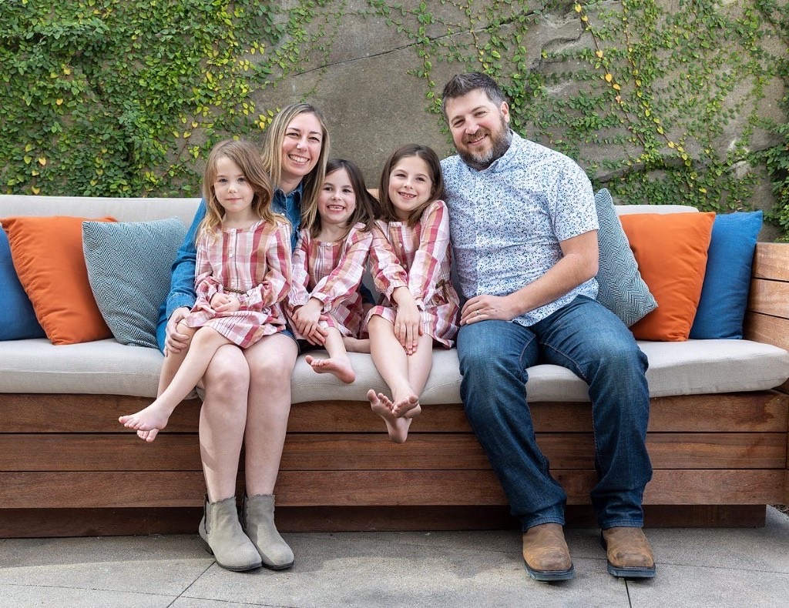

01
The first days
Bills, paperwork, funeral costs, a human who answers. We slow the immediate panic so grief has room, and so a widow is not hunting through drawers for accounts by herself.
From tragedy to legacy
Whisper Echo stays through the grieving season. We walk with widows, widowers, and children after a spouse or parent dies. Not as a replacement, but to help close the gaps the loss created. We slow the suddenness of tragedy and keep moving the family forward into the life and future that was already underway before everything changed.
The funeral is crowded. Then it is quiet.
Relatives go back to their lives. Friends stop knowing what to say. Meanwhile a surviving parent is trying to find the bank accounts, the insurance, the passwords — and a child is still supposed to be a child.
The death is sudden. The aftermath is a cliff. Whisper Echo exists to turn that cliff into a path: slower, more human, and still pointed toward a life of their own.
How we walk with them
We help with the load so the surviving parent can keep being the parent.
Little League, prom, a repair bill, a mortgage payment — those are seasons. We meet the family where they actually are.
Help that vanishes after the funeral is how families get lost. We remain a phone call away while they find their footing.
How we help
Start small. Stay specific. Work toward the stability a child would have had if that parent were still here — then let the family keep walking.
Bills, paperwork, funeral costs, a human who answers. We slow the immediate panic so grief has room, and so a widow is not hunting through drawers for accounts by herself.
Whatever the family was already in. An eight-year-old who just lost his father should not also lose hockey. We fund the sticks, the ice time, the uniform, the ride to practice — and we bring people, not just checks.
When there is money, it should become a legacy, not a scramble. We pay vetted attorneys and advisors to set up trusts so a child still has a leg up at eighteen. We do not give legal advice. We make sure no one is doing it alone.
Why this exists
Jordan was seven when his father died in 1992. There was life insurance. There were assets. No one helped his mother find them, understand them, or keep them. People came. Then they left. Some of what had belonged to his father was packed up and taken from the house. The family kept moving. The resources never became the security they needed. It never became a legacy.
Years later he watched it happen again. A woman had buried two sons, then a husband, and still had children to feed and raise. Within two weeks, the world had moved on.
In that moment Jordan realized someone needs to walk with the widows and the orphans. After two years of carrying the weight of it, he decided to act and Whisper Echo was born.
“Religion that is pure and undefiled before God the Father is this: to visit orphans and widows in their affliction.”
James 1:27 ESV

Who you’ll hear from
Jordan founded Whisper Echo. Kelly, his wife, is co-founder. They work this together.
Write hello@whisperecho.org. A person answers.
Give
We are building the first campaign of this work: a website with a public door, a way to give, and enough funding to stay with a small number of families through the season they are already in.
Give online and Givebutter will send a receipt. Mail a check to the address at right. To wire or give stock, write us and we will send instructions.